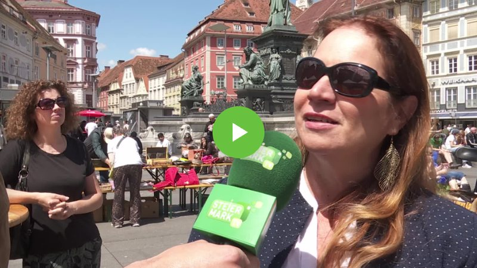
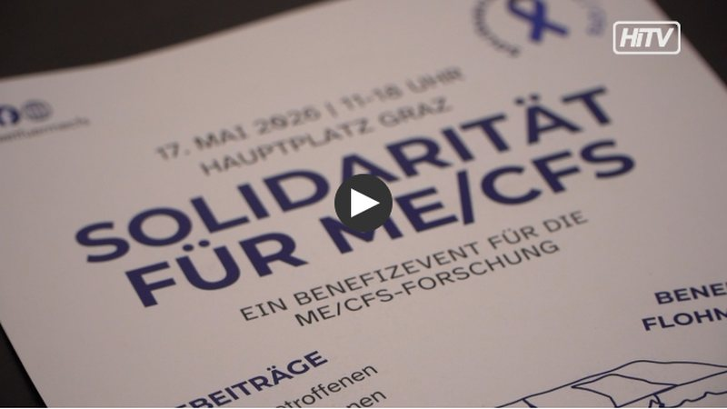
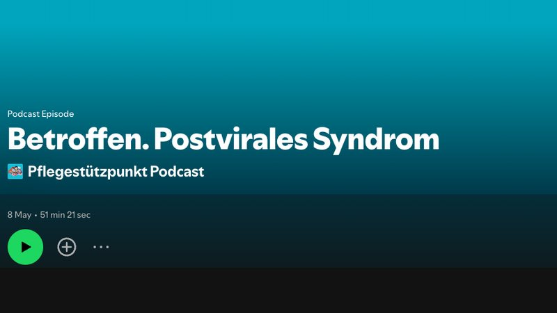
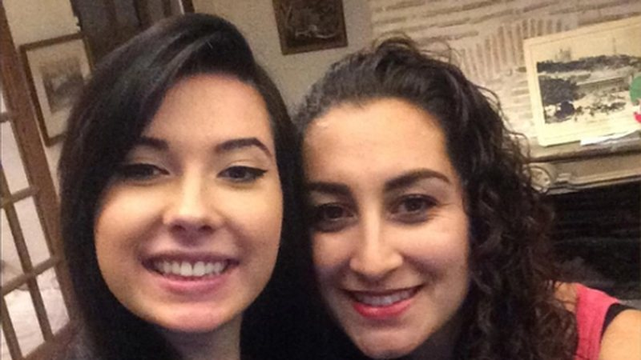
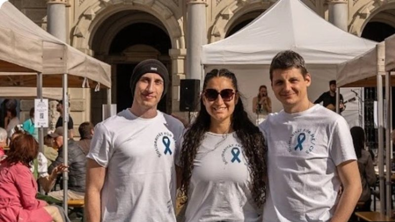
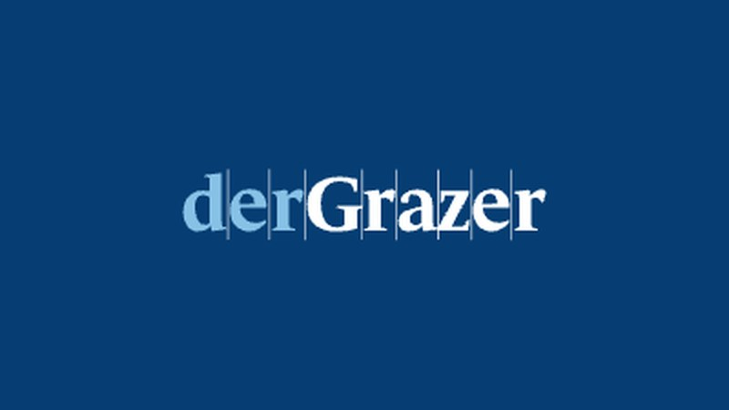

Rückblick
Rückblick 2026
Am 17. Mai 2026 fand „Solidarität für ME/CFS“ zum ersten Mal am Grazer Hauptplatz statt – mit Redebeiträgen, Benefiz-Flohmarkt und Musik. Hunderte Menschen waren dabei, und über 30.000 Euro kamen für die ME/CFS-Forschung zusammen. Danke an alle, die gekommen sind, gespendet und mitgeholfen haben!
Livestream-Aufzeichnung
Alle Redebeiträge vom 17. Mai 2026 zum Nachsehen
Betroffene, Medizin, Politik und Vereine: Die Aufzeichnung des Livestreams zeigt alle Redebeiträge vom Grazer Hauptplatz.
Auf YouTube ansehenPresse & Medien
Danke an alle Redaktionen, die über die Veranstaltung und ME/CFS berichtet haben.

Bild: Steiermark TVSolidarität für ME/CFS am Grazer Hauptplatz
Beitrag ansehen →
Bild: HiWay TVSolidarität und Aufmerksamkeit für ME/CFS
Beitrag ansehen →
Screenshot: SpotifyBetroffen. Postvirales Syndrom
Folge anhören →
Foto: privatWie eine Grazerin eine Benefizveranstaltung für ihre schwerkranke beste Freundin organisiert
Artikel lesen →
Foto: Barbara Stipper30.000 Euro für die ME/CFS-Forschung
Artikel lesen →
Benefizveranstaltung am Grazer Hauptplatz: Solidarität für ME/CFS
Artikel lesen →Solidarität sichtbar gemacht: Hunderte Menschen setzten in Graz Zeichen für ME/CFS
Beitrag ansehen →Infoblatt und Programm 2026


Die nächsten Benefizveranstaltungen: Freitag, 14. Mai 2027, Hauptplatz Linz und Samstag, 22. Mai 2027, 9–18 Uhr, Hauptplatz Graz – zu den Aktionen.